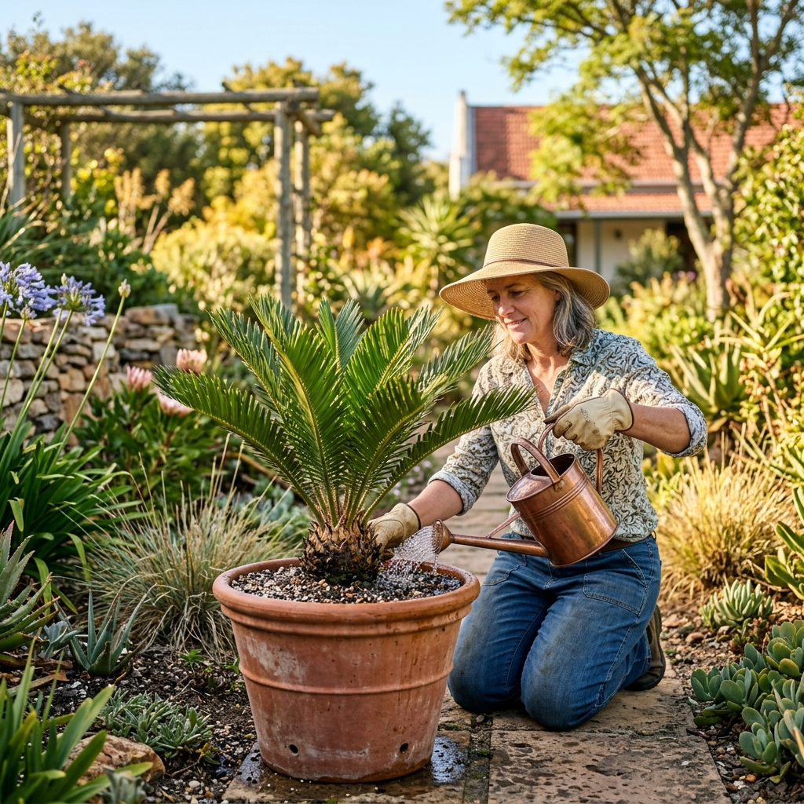

TIPS & TRICKS FOR THRIVING BROODBOME
Whether you're a seasoned collector or just brought home your first broodboom, proper care makes all the difference for these ancient plants to thrive for generations to come.
Proper sunlight is crucial. Most species prefer full sun to partial shade, but needs vary depending on the leaf type.
Cycads are relatively drought tolerant once established, but need consistent moisture during their active growing phase.
The number one killer of cycads is poor drainage. They need a porous mix that allows water to flow through freely.
Cycads aren't heavy feeders, but benefit from the right nutrients at the right time of year to support new flushes.
While generally resilient, cycads can fall victim to specific pests that need prompt attention to prevent damage.
Careful handling during repotting ensures the root system isn't compromised, preventing transplant shock.
Adjusting your care routine as the seasons change mimics their natural environment and prevents stress.
Often indicates overwatering, poor drainage, or a nutrient deficiency (like magnesium).
Can be caused by severe sunburn, underwatering, or root rot preventing water uptake.
Usually a sign of cycad scale infestation. Treat immediately to prevent rapid decline.
Indicates serious root rot from poor drainage. May need immediate emergency intervention to save.
Water deeply during the spring and summer growing season, allowing the top inch of soil to dry out between waterings. In winter, reduce watering significantly, perhaps only once every few weeks depending on rainfall.
Yes, many green-leaf species tolerate partial to full shade (though not deep gloom). Blue-leaf species typically require more direct sunlight to thrive and maintain their striking color.
In South Africa, all indigenous cycads (Encephalartos species) require a permit for possession, transport, or sale. Exotic species generally do not. We supply the necessary documentation for all our indigenous plants.
Cycads are famously slow-growing. Some species may only produce one flush of leaves per year, while others might flush twice. Trunk growth is often measured in millimeters per year.
Yes, all parts of the cycad are highly toxic to dogs, cats, and humans if ingested, particularly the seeds. Keep pets away from chewing on the leaves or eating the seeds.
Cycads must reach maturity to produce cones, which can take 10-20 years. Once mature, they generally cone in the spring or summer, though not necessarily every year.